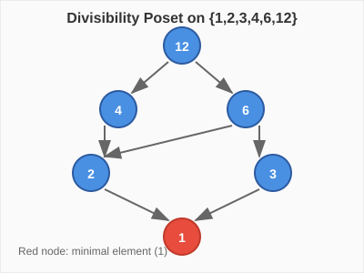
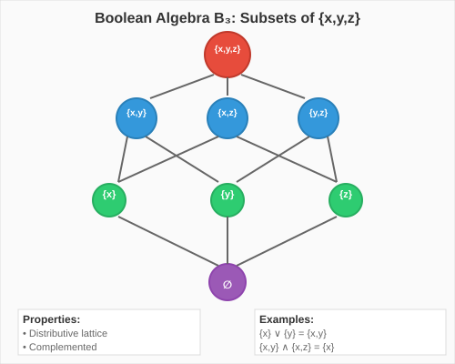
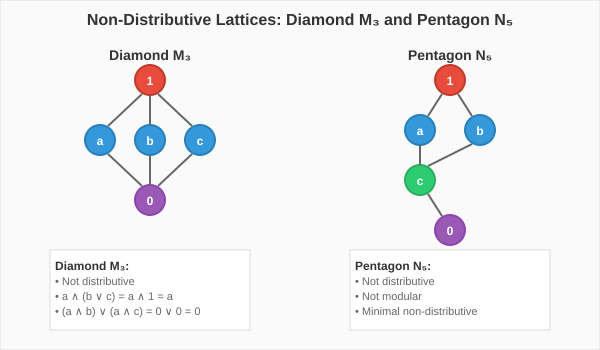
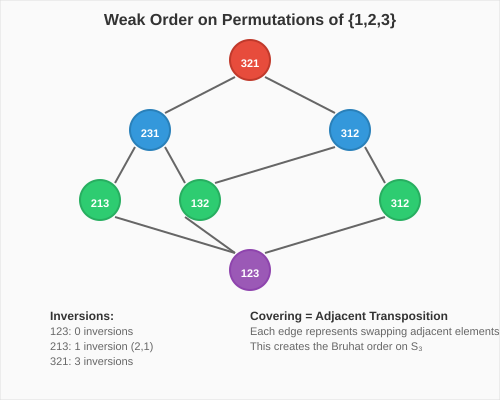
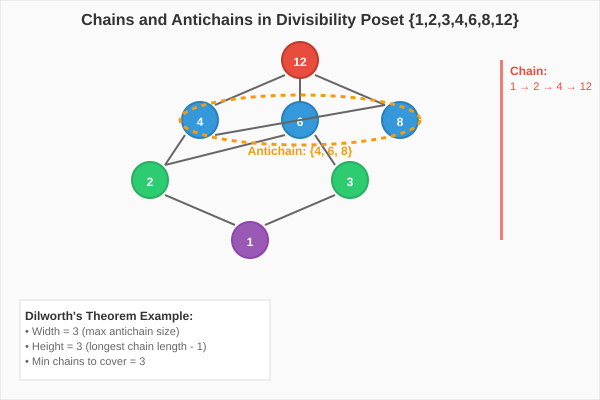
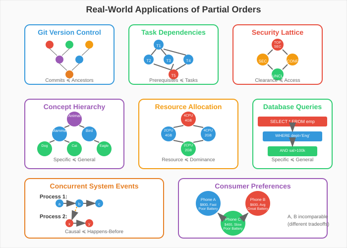

Partial Order and Hasse Diagram
1. Introduction to Relations
Before diving into partial orders, let's establish the foundational concept of relations and their properties.
Definition: Binary Relation
A binary relation on a set is a subset of . We write (or ) to mean .
Key Properties of Relations
Reflexivity: A relation on set is reflexive if for every element , we have .
- Example: " " on real numbers (every number equals itself)
- Counter-example: " " on real numbers (no number is less than itself)
Antisymmetry: A relation on set is antisymmetric if for all , if and , then .
- Example: " " on real numbers (if and , then )
- Counter-example: "loves" relation among people (mutual love doesn't imply identity)
Transitivity: A relation on set is transitive if for all , if and , then .
- Example: "ancestor of" relation (if is ancestor of and is ancestor of , then is ancestor of )
- Counter-example: "is friend of" relation (friend of friend isn't necessarily a friend)
Symmetry: A relation on set is symmetric if for all , if then .
- Example: "is married to" relation
- Counter-example: "is parent of" relation
2. Partial Orders: Definition and Properties
Definition: Partial Order (Poset)
A partial order (or partially ordered set, abbreviated as poset) is a set together with a binary relation that satisfies three properties:
- Reflexivity: For all ,
- Antisymmetry: For all , if and , then
- Transitivity: For all , if and , then
We denote a partially ordered set as or simply when the relation is clear from context.
Strict Partial Order
The strict partial order associated with is the relation defined by: if and only if and
This relation is:
- Irreflexive: No element is related to itself
- Asymmetric: If , then not
- Transitive: If and , then
Comparability
Two elements and in a poset are comparable if either or (or both, in which case ). Elements that are not comparable are called incomparable.
3. Examples of Partial Orders
Example 1: Divisibility on Natural Numbers
Let and define if divides .
Verification:
- Reflexivity: Every number divides itself
- Antisymmetry: If and , then
- Transitivity: If and , then
Relations:
- everything (1 divides all numbers)
Incomparable pairs: , , , , , , , etc.
Example 2: Subset Relation on Power Set
Let and consider with the subset relation .
Structure:
- all sets
Incomparable pairs: , , , , ,
Example 3: Lexicographic Order on Strings
Consider the set of strings with lexicographic ordering (dictionary order).
Order:
This is actually a total order since every pair of elements is comparable.
Example 4: Information Order on Partial Functions
Let and . Consider partial functions from to , ordered by information content: if and for all .
Example functions:
- : undefined everywhere
- :
- :
- :
- :
Relations: everything, , , , but and are incomparable.
4. Special Elements in Partial Orders
Minimal and Maximal Elements
- An element is minimal if there is no element such that
- An element is maximal if there is no element such that
Note: A poset may have multiple minimal/maximal elements, or none at all.
Least and Greatest Elements
- An element is the least element (or minimum) if for all in the poset
- An element is the greatest element (or maximum) if for all in the poset
Note: If they exist, least and greatest elements are unique.
Lower and Upper Bounds
For a subset of a poset :
- An element is a lower bound of if for all
- An element is an upper bound of if for all
Infimum and Supremum
For a subset of a poset :
- The infimum (or greatest lower bound, glb) of is the greatest element among all lower bounds of
- The supremum (or least upper bound, lub) of is the least element among all upper bounds of
Example: In the divisibility poset on :
- (greatest common divisor)
- (least common multiple)
5. Hasse Diagrams: Construction and Interpretation
Definition and Purpose
A Hasse diagram is a graphical representation of a finite partially ordered set that eliminates redundant information by showing only the "covering" relations.
Covering Relation
Element covers element (written ) if:
- ( is strictly less than )
- There is no element such that
Construction Rules for Hasse Diagrams
- Vertices: Each element of the poset is represented by a vertex
- Edges: Draw an edge between and if one covers the other
- Vertical arrangement: If , place below
- Transitivity elimination: Don't draw edges for relations that follow from transitivity
- No self-loops: Reflexivity is implicit
- Direction: Lower elements are "less than" higher elements
Step-by-Step Construction Example
Poset: Divisibility on
Step 1: List all relations
Step 2: Identify covering relations
- (, no element between)
- (, no element between)
- (, no element between)
- (, no element between)
- (, no element between)
- (, no element between)
- (, no element between)
Step 3: Draw the diagram

Reading Hasse Diagrams
To determine if : Check if there's an upward path from to .
Examples using the divisibility diagram above:
- ? Yes (path: or )
- ? Yes (direct path: )
- ? No (no upward path from 4 to 6)
6. Advanced Examples and Applications
Example 1: Boolean Algebra B₃
Consider the Boolean algebra of subsets of a 3-element set .
Elements: All 8 subsets of Relation: Subset inclusion

Properties:
- Least element:
- Greatest element:
- Every pair has a unique inf and sup
- Complemented (every element has a complement)
Operations:
- Join ():
- Meet ():
- Complement:
Example 2: Non-Distributive Lattices
Definition: Distributive Lattice
A lattice is distributive if for all elements :
Equivalently, a lattice is distributive if:
These two conditions are equivalent in the context of lattices. Many common lattices are distributive (e.g., Boolean algebras, divisibility posets), but some important lattices fail this property.

The Diamond lattice and Pentagon lattice are fundamental examples of non-distributive lattices. These are the smallest lattices that fail the distributive property.
Diamond failure: Since , distributivity fails.
Pentagon failure: Similarly demonstrates non-distributivity and is also non-modular.
Example 3: Partition Lattice
Consider all partitions of the set ordered by refinement.
Partitions:
- (coarsest)
- , , ,
- , , , , , , , ,
- (finest)
Refinement relation: if every block of is contained in some block of .
Example 4: Young Diagrams
Young diagrams (used in representation theory) form a partial order under inclusion.
Example Young diagrams for partitions of 4:
Ordering: if the Young diagram of fits inside the Young diagram of .
Example 5: Dominance Order on Permutations
Consider permutations of with the weak order.
Permutations:
Covering relations (via adjacent transpositions):
- (swap positions 2,3)
- (swap positions 1,2)
- (swap positions 1,2)
- (swap positions 1,3)
- (swap positions 2,3)
- (swap positions 1,3)
- (swap positions 1,2)
- (swap positions 2,3)

Inversion Table Interpretation: Each permutation can be characterized by its inversion count. The covering relations correspond to adding exactly one inversion via adjacent transposition.
Geometric Interpretation: This poset corresponds to regions in the braid arrangement, with maximal chains corresponding to reduced expressions in the symmetric group.
Example 6: Ideal Lattice in Ring Theory
In the ring , consider the lattice of ideals ordered by inclusion.
Ideals: where represents the ideal generated by .
Relations:
- everything
Example 7: Formal Concept Analysis
Given a formal context where is a set of objects, is a set of attributes, and : Example Context
| Object | Attribute 1 | Attribute 2 | Attribute 3 |
|---|---|---|---|
| Object A | ✓ | ✗ | ✓ |
| Object B | ✓ | ✓ | ✗ |
| Object C | ✗ | ✓ | ✓ |
Galois Connection: For and :
Formal Concepts: Pairs where and
The set of all formal concepts forms a complete lattice called the concept lattice.
7. Comparing Partial Orders
Order Isomorphism
Two posets and are order isomorphic if there exists a bijection such that: if and only if
Order Embedding
A function between posets is an order embedding if: if and only if
Chain and Antichain
- A chain is a totally ordered subset (all elements are comparable)
- An antichain is a subset where no two distinct elements are comparable
Dilworth's Theorem: In any finite poset, the maximum size of an antichain equals the minimum number of chains needed to cover the poset.

Width and Height
- The width of a poset is the size of its largest antichain
- The height of a poset is the size of its longest chain minus 1
8. Real-World Applications

Software Version Control
Git commits form a partial order where commit commit if is an ancestor of . Merge operations create elements with multiple immediate predecessors.
Example: Consider commits where:
- is the initial commit
- and branch from
- merges and
This creates the poset:
Task Dependencies in Project Management
In project management, tasks form a partial order where task task if must be completed before can begin. Critical path analysis finds maximal chains.
Example Project Tasks:
- : Requirements gathering
- : Database design
- : UI design
- : Backend implementation
- : Frontend implementation
- : Integration testing
Dependencies: and and and
Information Systems and Query Specificity
In databases, queries can be ordered by specificity. A more specific query provides a subset of results from a less specific query.
Example SQL queries on employee database:
- :
SELECT * FROM employees - :
SELECT * FROM employees WHERE department = 'Engineering' - :
SELECT * FROM employees WHERE department = 'Engineering' AND salary > 100000
Order: (more specific queries return subsets)
Concurrency Theory and Causality
Events in concurrent systems form a partial order where if event causally precedes event . Incomparable events represent potentially simultaneous occurrences.
Lamport's Happens-Before Relation: For events in a distributed system: if:
- and are in the same process and occurs before
- is a send event and is the corresponding receive event
- There exists such that and (transitivity)
Concept Hierarchies in Knowledge Representation
In ontologies and knowledge graphs, concepts form partial orders where if concept is more specific than concept .
Example Taxonomy:
Multiple inheritance:
Preference Modeling in Decision Theory
Consumer preferences often form partial orders where incomparable elements represent different trade-offs.
Example: Smartphone preferences based on (price, performance, battery life)
- Phone A: ($800, high performance, average battery)
- Phone B: ($600, average performance, excellent battery)
- Phone C: ($400, low performance, poor battery)
Relations: and , but and are incomparable (different trade-offs)
Security Classification Lattices
Security classifications form lattices where information can flow from lower to higher classification levels.
Example Military Classification:
- Levels: Unclassified Confidential Secret Top Secret
- Compartments: Need-to-know basis creates additional partial order structure
- Clearance: Person can access information at their level and below
Resource Allocation in Distributed Systems
Resource allocations form partial orders based on availability and priority.
Example Computing Resources:
- Allocation : 2 CPUs, 4GB RAM
- Allocation : 4 CPUs, 2GB RAM
- Allocation : 4 CPUs, 4GB RAM
Relations: and , but and are incomparable
Basic Exercises
Exercise 1: Determine which of the following relations on are partial orders:
a)
b)
c)
Exercise 2: For the poset of divisors of 24, find:
a) All maximal elements
b) All minimal elements
c) The greatest element (if it exists)
d) The least element (if it exists)
Exercise 3: Draw the Hasse diagram for:
a) The poset of divisors of 30
b) The poset ordered by
c) The poset with iff
Intermediate Exercises
Exercise 4: In the lattice of subsets of , find:
a)
b)
c)
d)
Exercise 5: Prove that in any poset, if a greatest element exists, then it is unique.
Exercise 6: Given the poset with Hasse diagram:
d
/ \
b c
\ /
a
a) Which elements are comparable to ?
b) What are and ?